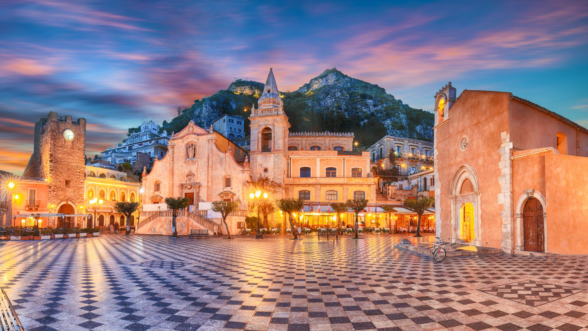

TAORMINA
La perla dello Ionio
Celebre in tutto il mondo per il suo spettacolare Teatro Antico, che offre una vista mozzafiato sull'Etna e sulle coste ioniche, Taormina è un concentrato di storia, eleganza e bellezze paesaggistiche che incanta viaggiatori, scrittori e artisti da secoli.